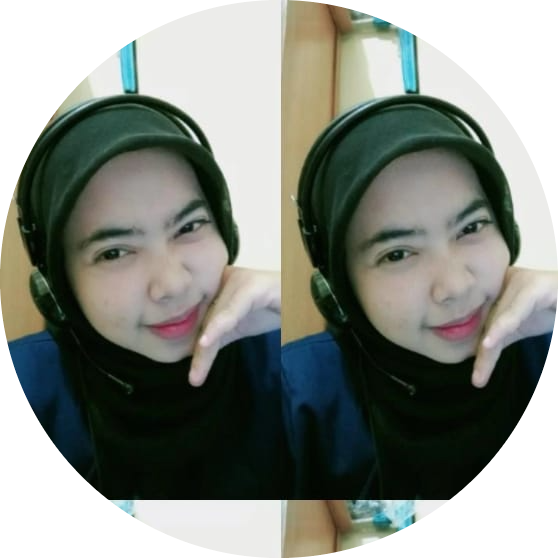

|  | Erika Riani
Mahasiswa Universitas Nahdlatul Ulama Cirebon Fakultas Ilmu Komputer Program Studi Teknik Informatika Hubungi Saya |
| 2008 - 2014 | Anggota Ekskul Keperamukaan MI Darul Masholeh |
| 2014 - 2017 | Anggota Ekskul Pencak Silat Perguruan Setia Putra MTsN 2 Cirebon |
| Anggota Organisasi Intra Sekolah MTsN 2 Cirebon | |
| 2017 - 2020 | Wakil Ketua Remaja Masjid Baiturrahman SMAN 9 Cirebon |
| Anggota Ekskul Pencak Silat SMAN 9 Cirebon | |
| Bendahara Ekskul Keperamukaan SMAN 9 Cirebon | |
| 2020 - 2024 | Sekretaris Umum IPPNU Universitas Nahdlatul Ulama Cirebon (UNUC) |
| Bendahara PAC IPPNU Harjamukti | |
| Bidang Kerja sama BTM FILKOM Universitas Nahdlatul Ulama Cirebon (UNUC) | |
| Ketua IPPNU Universitas Nahdlatul Ulama Cirebon (UNUC) | |
| Sekretaris Umum BTM FILKOM Universitas Nahdlatul Ulama Cirebon (UNUC) |
| Sketch Drawing | ⭐⭐⭐ |
| Microsoft Office | ⭐⭐⭐ |
| Pixellab | ⭐⭐ |